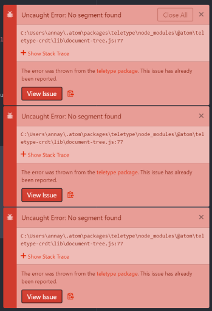

Lab 8: Anon Functions and Callbacks
Challenge
With your partner, experiment with anonymous functions and callbacks. A challenge we encountered was making the callback functions work at first since we forgot the syntax.
Problems
A large problem we encountered was Teletype giving us uncaught error messages and we were unable to work for a short while until we closed and reopened atom.
Results
The results can be found in the console to the right.